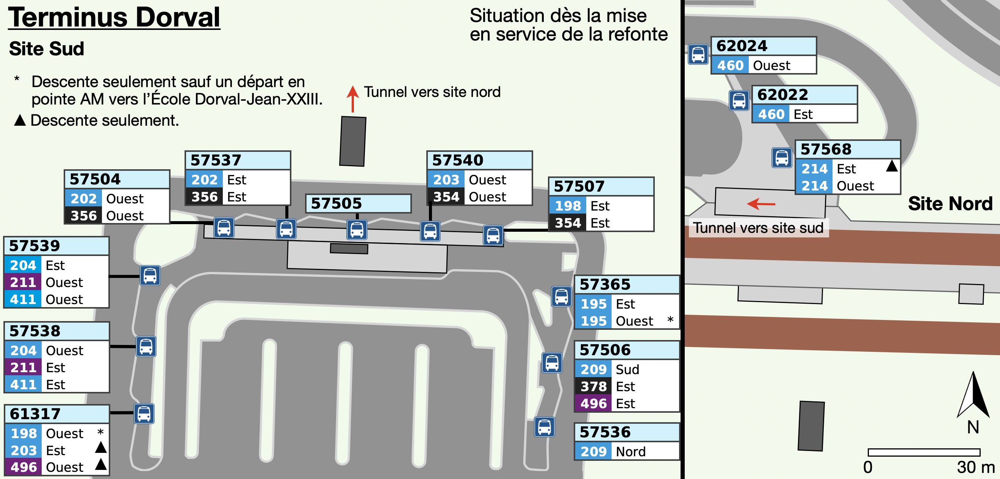
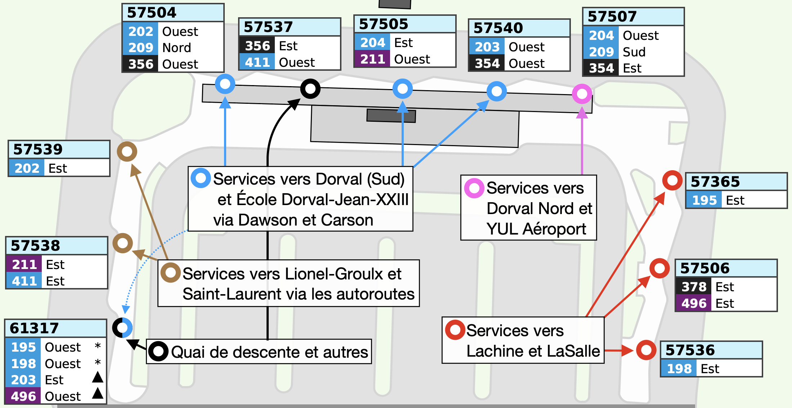

Optimisation d'assignation des quais au Terminus Dorval
Ici, je propose des optimisations d'assignation des quais au Terminus Dorval,
pour régler divers problèmes d'utilisation d'espaces disponibles. J'énumère
les principales problématiques :
- Certains quais sont sur-utilisés, étant partagés par plusieurs lignes,
parfois ayant des destinations différentes, parfois fréquent ;
- Un quai est présentement vacant ;
- Quelques parcours ayant des dessertes similaires sont aux côtés
opposés du terminus ;
- Les quais ne sont pas regroupés selon les secteurs desservis, mais
sont tous éparpillés.
Le plan du terminus, une fois la refonte mise en place, sera suit :

Selon le plan ci-dessus, voici quelques exemples illustrant mes
observations quant à l'utilisation sous-optimale du terminus :
- Les quais 57538 et 57539 sont partagés par 3 lignes, soit 204, 211 et 411.
Les lignes 211 et 411 seront relativement fréquentes en pointe, en plus
d'être 7 jours.
- L'arrêt 57506 est partagé entre les lignes 209 (vers YUL) et 496. La ligne
496 est fréquente en pointe et fonctionne 7 jours. Les deux lignes n'ont aucune
desserte en commun.
- Le quai 57504 est vacant. Il était occupé par les lignes 204 (hors pointe)
et 460.
- Les lignes 202 Ouest et 209 Nord desservent désormais tous les deux Dawson,
pour un chevauchement d'environ 5 km. Cependant, six autres quais séparent
leurs arrêts à Dorval.
Brièvement, les lignes à Dorval (ligne de jour seulement) peuvent être
regroupées comme suit:
- Descente seulement : 195-O*, 198-O*, 203-E, 496-O
- Desserte vers Lachine / LaSalle : 195-E, 198-E, 496-E
- Desserte vers Dorval Sud : 195-O*, 198-O*, 202-O, 203-O, 204-E, 209-N
- Desserte au nord de l'Autoroute 20 : 202-E, 209-S
- Desserte vers l'est via l'Autoroute 20 : 211-E, 411-E
Parmi ces lignes, plusieurs partagent des tronçons en commun : 195-O
[École Dorval-Jean-XXIII], 198-O [École Dorval-Jean-XXIII], 202-O et 209-N (Dawson),
203-O, 204-E et 211-O (Carson), 211-E et 411-E (A-20 vers Lionel-Groulx). On voit
alors qu'il est possible de regrouper les lignes d'un même secteur au même quai.
Le schéma ci-dessous présente l'assignation de quais suggérée :

Des attentions particulières ont été apportées pour jumeler seulement les lignes
passantes au même quai : chaque ligne qui effectue un battement (195, 198, 203 et
496) a son propre quai attribué. De plus, considérant la nature du terminus, ces
dernières utilisent la moitié est du terminus pour permettre assez d'espace pour
effectuer les battements.